Доспехи
В игре существуют:
Сыромятные доспехи
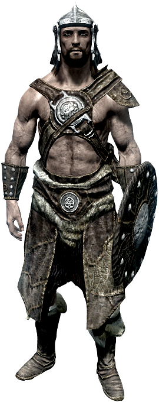
Кожаные доспехи
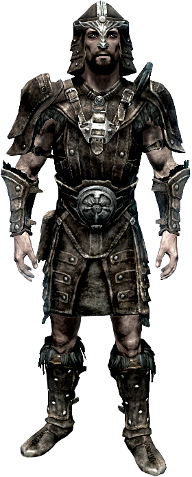
Железные доспехи
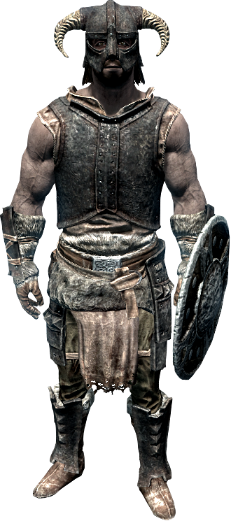
Стальные доспехи
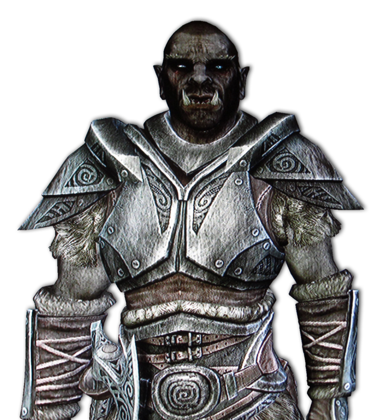
Нордские доспехи
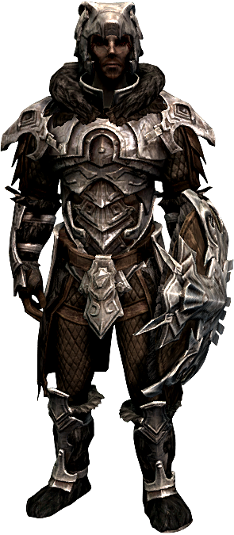
Эльфийские доспехи
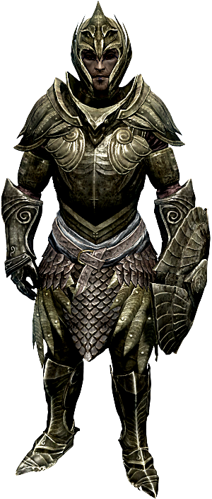
Двемерские доспехи
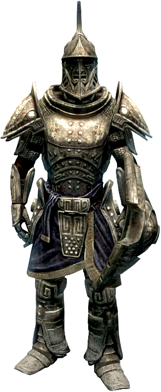
Орочьи доспехи
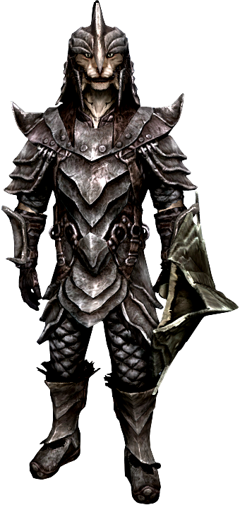
Ламеллярные доспехи
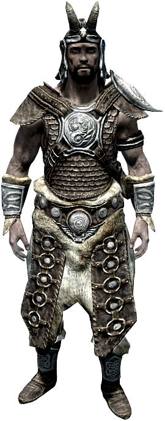
Стальные пластинчатые доспехи
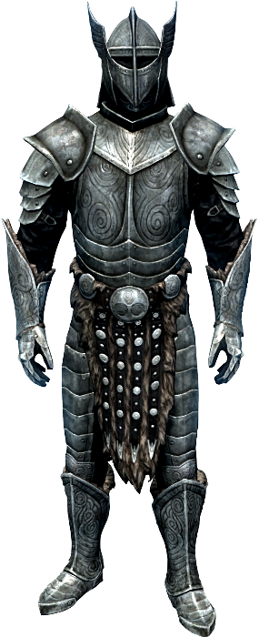
Эбонитовые доспехи
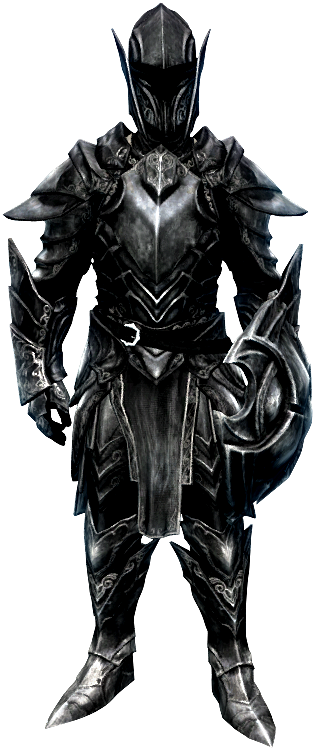
Стеклянные доспехи
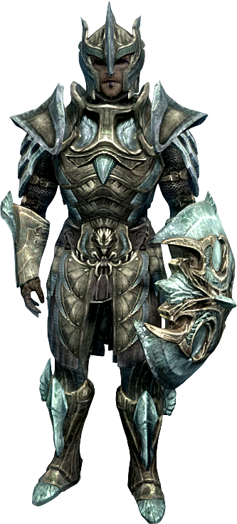
Даэдрические доспехи
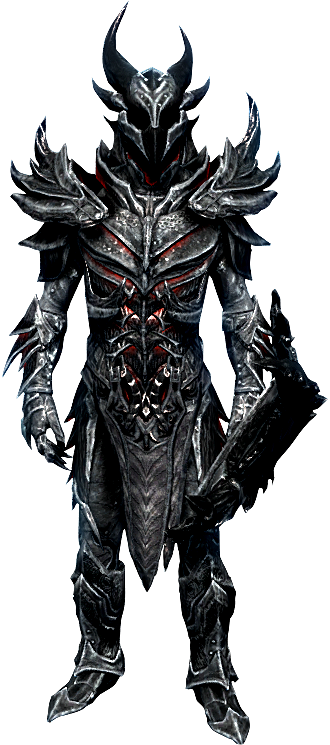
Драконьи чешуйчатые доспехи
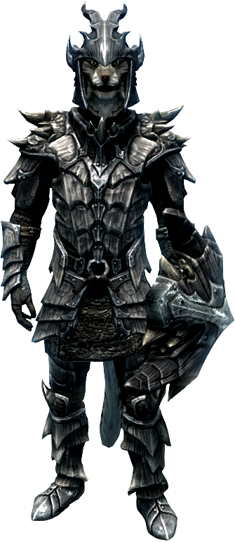
Драконьи панцирные доспехи
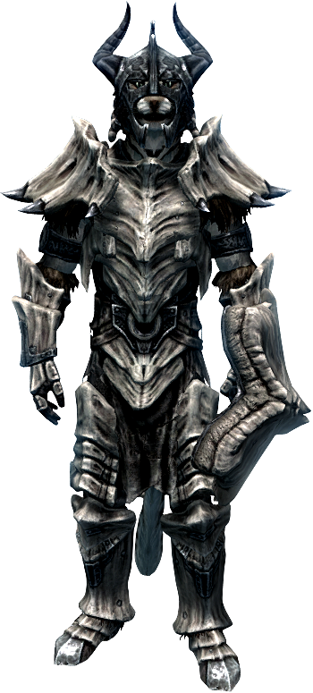
Костяные доспехи
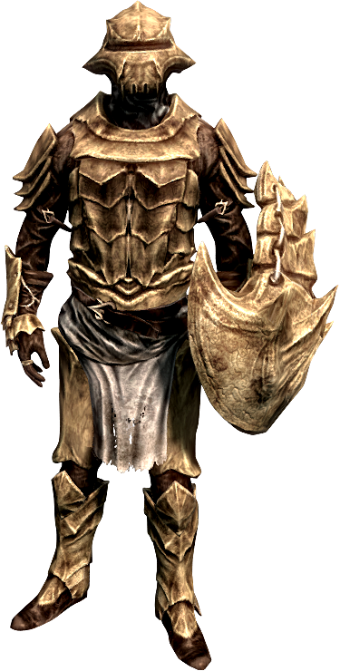
Помимо этих доспехов, в игре можно найти уникальные доспехи в единственном экземпляре(задания Даэдра, Гильдии), а также Доспехи Братьев Бури, Имперские доспехи, Вампирские доспехи, доспехи стражи Рассвета, Фалмерские доспехи и доспехи Изгоев.
Вернуться в галерею
Kolosov(Rainbow Dash©2015)